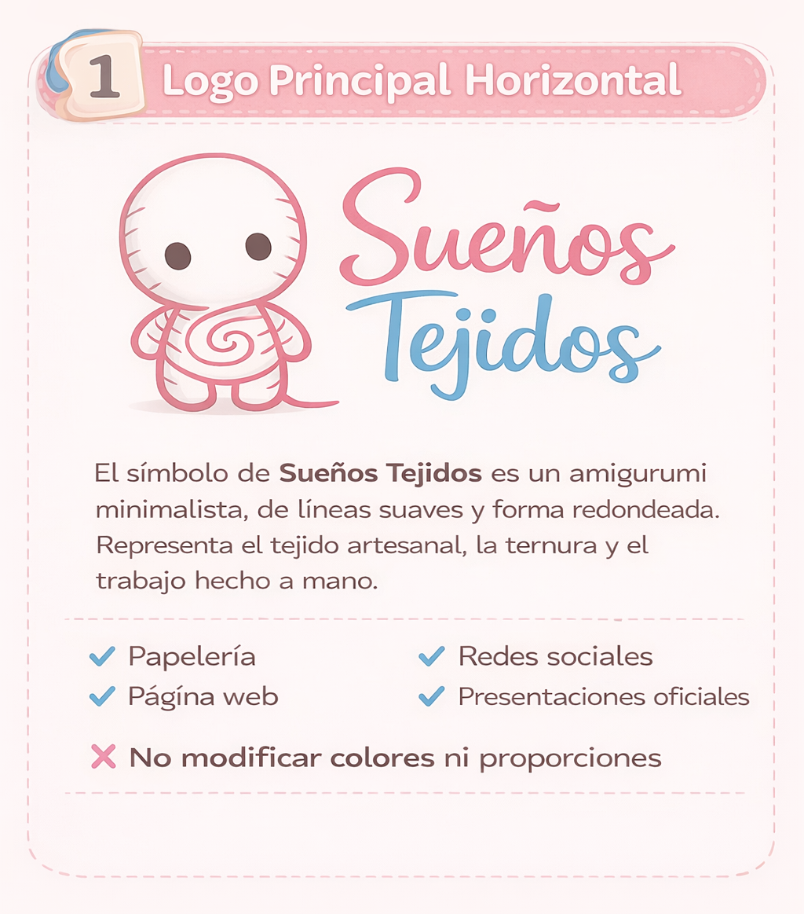
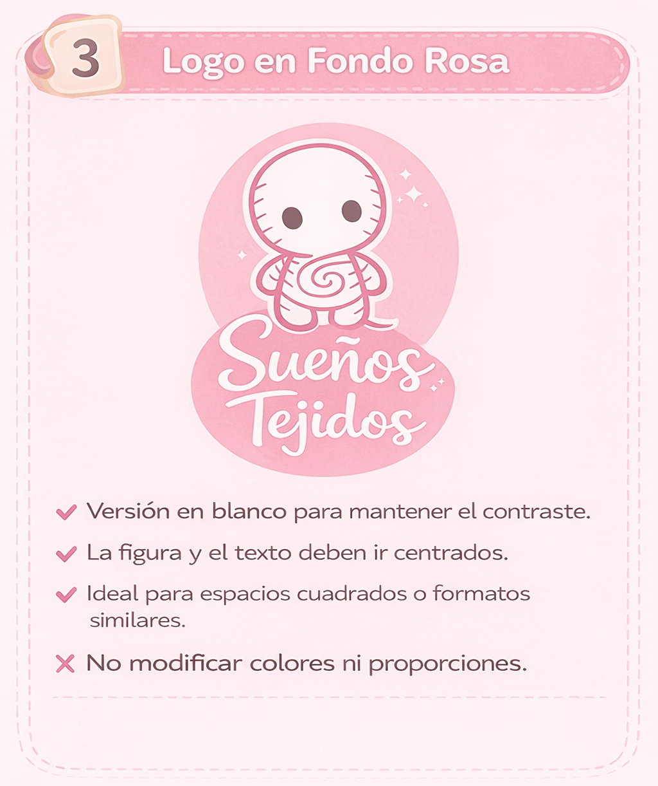
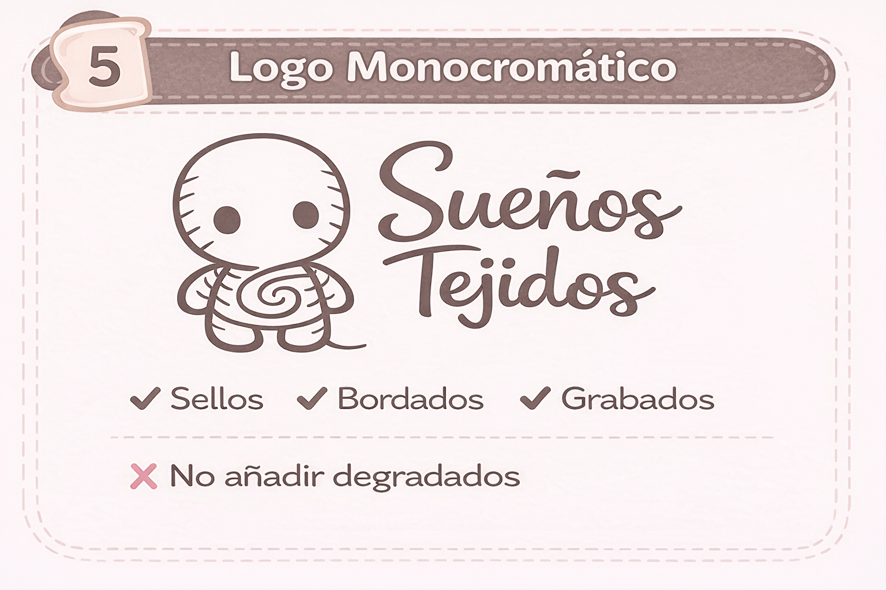

Manual de Marca
Uso correcto del logo
Guía visual para mantener la coherencia y reconocimiento de la marca Sueños Tejidos.
Aplicaciones del logo
Sueños Tejidos

Versión Horizontal
Para espacios amplios horizontales. Mantener proporciones originales.

Versión Vertical
Uso en formatos verticales o redes sociales.

Fondo Rosa
Aplicación sobre fondos claros respetando contraste.

Fondo Azul
Versión para fondos fríos manteniendo legibilidad.

Monocromático
Uso en impresión o limitaciones de color.

Icono
Aplicaciones digitales pequeñas o favicon.